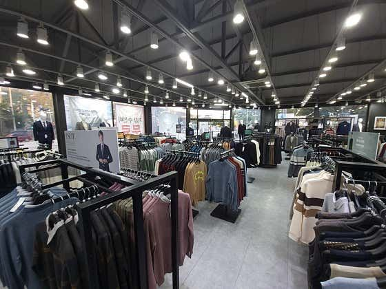
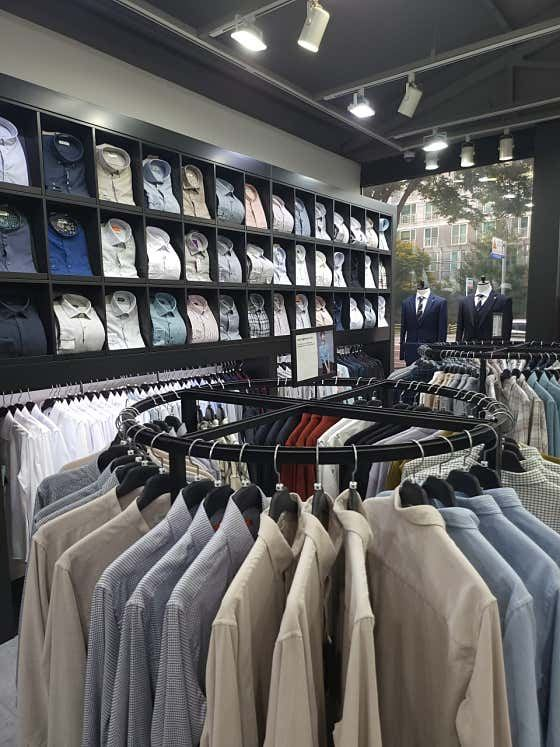
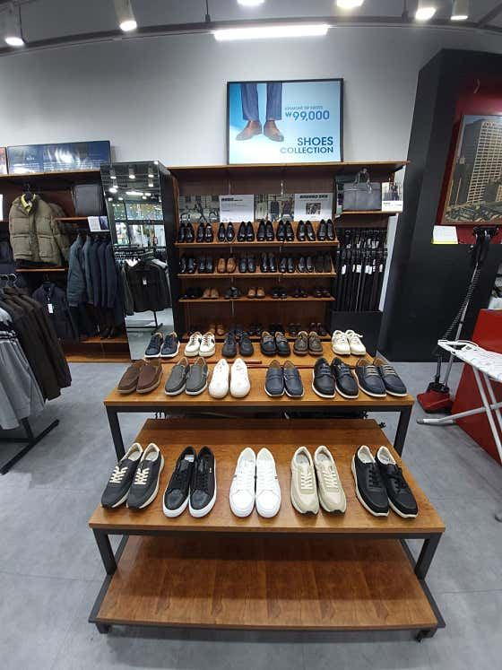
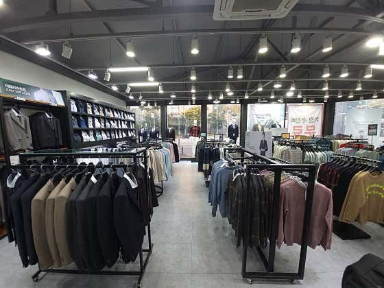

Reviews
네이버 정장 구매 후기 3,000벌 돌파
구미 남자정장·양복 매장을 찾는 분들이 남긴 방문자 리뷰 3,367건. 가장 많이 꼽힌 키워드입니다.
친절해요 2,813품질이 좋아요 2,574가성비가 좋아요 2,100종류가 다양해요 1,567분위기가 편안해요 1,102
Store
인동 정장 매장 둘러보기




Price
대표 가격
| 정장세트 (상의+하의) | 199,000원 |
| 자켓 | 129,000원 |
| 코트 | 139,000원 |
| 구두 | 79,900원 |
| 치노팬츠 | 59,900원 |
| 슬랙스 | 49,900원 |
| 니트 | 39,900원 |
| 셔츠 | 29,900원 |
Visit
오시는 길
- 주소
- 경북 구미시 인동54길 4
- 전화
- 0507-1389-5956
- 영업시간
- 10:00 오픈 · 영업시간은 네이버 플레이스 참고
- 주차
- 매장 바로 뒷편 대형 주차장 (구평 행복주차장)